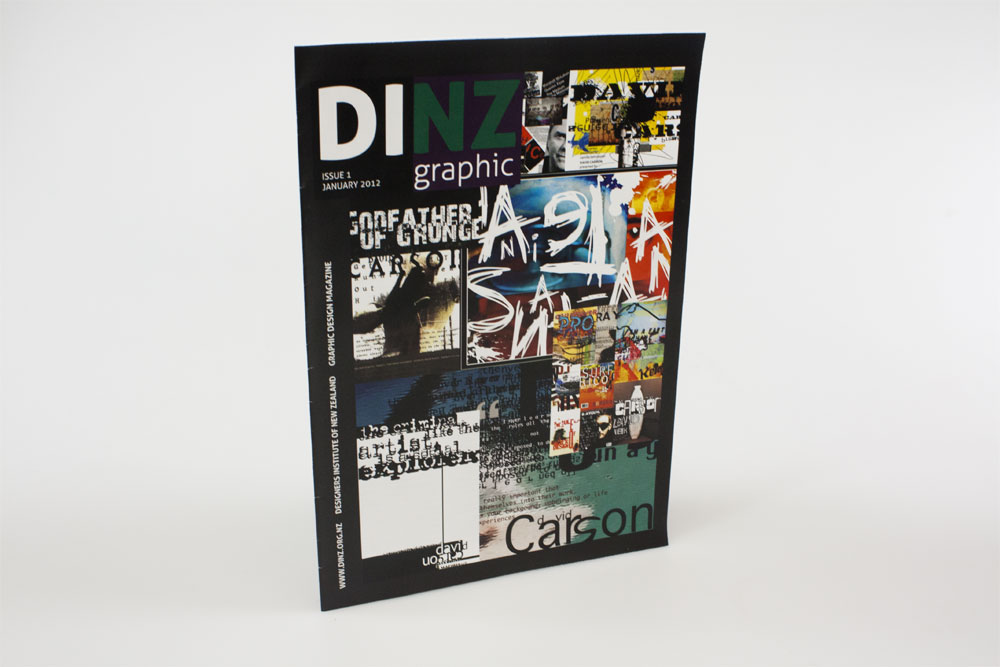

Typographical Magazine
Designed and output a full colour, 8 page typographic magazine. The trim size had to be A4. Document had to be set up to the specifications provided. This was the first edition of a new magazine. I had to decide on a name and an appropriate nameplate for the front cover. Text and images were provided. I had to decide on the purpose of the magazine, who the target audience was and what message I wished to convey. I needed to use imagery, typography and supporting design elements that would help convey the message in my magazine and appeal to my chosen target audience. The magazine was to be full colour CMYK only. I had to use all the text supplied and choose suitable images to accompany the text from those supplied. I had to set up and use paragraph styles for all of the text and use character styles where appropriate. I had to also use master pages and automatic page numbering.